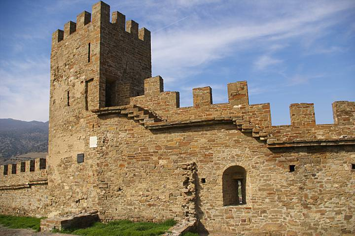

Фортеця була побудована за проектом генуезьких фортифікаторів у кращих традиціях західноєвропейського середньовіччя, вона вражає досконалістю інженерної думки. ЇЇ площа – 29,5 гектара. Зі сходу та півдня цитадель була неприступна, із заходу — важкодоступна, з північного сходу доступ перегороджував глибокий рів. Фортеця має два яруси оборони між яки розташовувалось місто. Нижній ярус являє собою зовнішню масивну стіну висотою 6-8 метрів і товщиною 1,5 – 2 метри. Стіна укріплена чотирнадцятьома бойовими 15-метровими вежами й комплексом Головних воріт. Верхній ярус складається з Консульського замка й веж, з’єднаних стіною, а також комплексу Дозорної вежі на самій вершині. За межами кріпосних стін розташована ще одна башта — Фредеріко Астаґверра (Портова). За часів генуезців вона з’єднувалася стіною з Кутовою баштою фортеці і з баштою, що стояла на горі Палвані-оба. Ця оборонна лінія захищала територію старого порту Солдайі.
До наших днів з башт північно-східної ділянки нижнього оборонного поясу краще збереглася триярусна, відкритого типу (тристінна) башта Пасквале Джудіче, споруджена 1392 р. Цікавими є і башти Півкругла (єдина в системі фортеці півкругла в плані) та Коррадо Чікало, яку було зведено в 1404 р. З оборонних споруд портового укріплення, розташованих біля західного підніжжя Фортечної гори, збереглася триярусна, квадратна в плані башта Астагвера (Портова), споруджена в 1386 р.
Якщо ви цінитель архітектури та історії, і бажаєте зануритися в атмосферу пізнього середньовіччя, відвідайте Генуезьку фортецю в Судаку. Ця фортеця, одна з націкавіших місць України, нарівні з Хотинською фортецею.